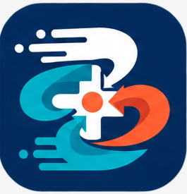

EMS / Ambulance
Available

SAHAAY
MR
Synthetic demo
Maya Rao
Reporter demo profile
INC-2048
Reporter view
Draft report
--:--:--
Reporter intake
Draft
Start the incident report
Location12.9716 N, 77.5946 E
TowerKRM-S03
Battery62%

LIVE REC
AN
Dispatcher Arjun
Connected
MR
Selfie camera
Video call connected
Requesting front camera for demo preview
Dispatch queue
Triaging
Verify and assign the incident
Tree-fall rescue
Koramangala signal
92% context confidence
CALL WAITING
Incident scene feed
Primary view for dispatcher analysis
MR
Reporter Maya Rao
AN
Dispatcher Arjun
Ops console
Incident scene with reporter call
Scene feed is prioritized; waiting for reporter connection
Reporter saysLive call open; details can be captured by dispatcher.
Verified contextGPS, tower KRM-S03 and battery context.
Needs confirmationOccupants responsive, injury status, all doors jammed, police control and tree hazard.
Multi-agency availability
EMS, police, fire mapped
1000 m primary radius
Recommended for this tree-fall obstruction
Send fire/rescue for tree cutting and safe exit access, ambulance for medical assessment, and police for traffic/crowd control. Keep EMS backup ready.
Police
Patrol P-12
520 m · ETA 03:10 · Traffic control and scene safety
Fire / Rescue
Fire Rescue F-03
1.18 km · ETA 06:10 · Tree cutting, branch stabilization and safe exit access
EMS backup
Ambulance B-14
960 m · ETA 05:35 · Backup medical assessment if injuries are found
Catastrophe escalation
Code Blue mode
Use only when the dispatcher confirms a mass-casualty or fast-escalating incident. This demo will mark EMS, police and fire/rescue units for transit.
EMS ambulance
Assigned
Assess after rescue access
 ETA 04:20
ETA 04:20
Access pointStage south side until Fire F-03 clears branches and creates a safe exit.
Other agenciesFire F-03 for tree cutting; Police P-12 for road and crowd control.
Reporter evidencePhoto optional; live call context available to dispatcher.
Handoff closure